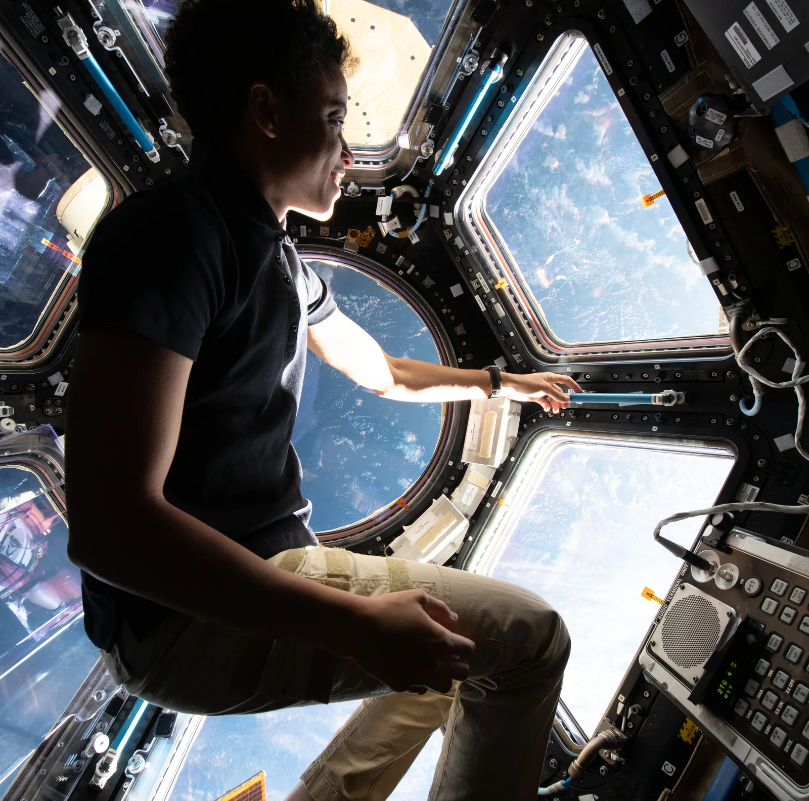

Voima vuorovaikutuksen mittana ja paino $G = mg$
Miksi astronautti painaa Kuussa vain kuudesosan siitä, mitä hän painaa Maassa, vaikka hänestä ei ole kadonnut mitään?
Pohjatiedot
- Suoraan verrannollisuus ja origon kautta kulkeva suora, esimerkiksi $s = vt$ (FY1)
- Arkikokemus: painava ja kevyt esine, venyvä jousi tai kuminauha (arkitieto, ei edeltävää oppituntia)
Ydinpolku: tee vaiheet järjestyksessä. Ydinpolulla ei vain lasketa. Siinä myös tutkitaan, selitetään ja piirretään kuvaajia. Valinnainen-tehtävät ovat lisäharjoittelua. Valinnaisia tehtäviä on 6.
Luvun tärkeät käsitteet Vapaaehtoinen
Tutustu luvun tärkeisiin käsitteisiin. Voit kirjoittaa niiden merkitykset sinulle vahvimmalla kielellä tai useammalla kielellä.
- Vuorovaikutus
- Kaksi kappaletta vaikuttaa toisiinsa, esimerkiksi vetää tai työntää toisiaan. Vuorovaikutus on aina molempiin suuntiin.
- Voima
- Kertoo, kuinka voimakas vuorovaikutus on. Voiman yksikkö on newton.
- Massa
- Kertoo, kuinka paljon ainetta kappaleessa on. Massa on sama kaikkialla. Yksikkö on kilogramma.
- Paino
- Voima, jolla Maa tai muu taivaankappale vetää kappaletta. Paino riippuu paikasta, massa ei.
- Putoamiskiihtyvyys
- Kertoo, kuinka suuri paino on yhtä kilogrammaa kohti. Se on eri suuri eri taivaankappaleilla.
Pohdinta
Voimamittari on pohjimmiltaan pelkkä jousi. Ripusta siihen Maassa $10\,\text{kg}$:n näytelaatikko. Jousi venyy tietyn matkan. Vie sama laatikko ja sama mittari Kuuhun. Siellä jousi venyy paljon vähemmän. Laatikossa on yhtä paljon ainetta kuin ennenkin, eikä jousikaan ole muuttunut. Jokin muu on muuttunut.
Mitä voimamittarin jousi oikeastaan mittaa? Mikä siinä muuttuu, kun paikka vaihtuu?
Valinnainen Kertaa FY1:stä: suoraan verrannollisuus
Ennusta
Tee ennusteet ennen tutkimista 2 kysymystä
Valinnainen Ennuste 1: massa kolminkertaistuu
Ennuste 2: sama kappale toisella planeetalla
Tutki
Simulaatio
Käyttöohje
Seuraa jousen venymää, punaista painon nuolta ja palkkikaaviota. Palkkikaaviossa sama massa on punnittu kaikilla neljällä taivaankappaleella.
Mallin oletukset
Lukemat ovat mallin arvoja. Simulaatio laskee ne kaavasta. Se olettaa, että putoamiskiihtyvyys on taivaankappaleen pinnalla vakio.
Valitse taivaankappale ja säädä massaa.
Koe 1: vain massa muuttuu
Testaa ennuste 1. Taivaankappale on lukittu Maaksi, ja vain massa muuttuu. Kirjaa paino ainakin kahdella massalla, esimerkiksi $10\,\text{kg}$, $20\,\text{kg}$ ja $30\,\text{kg}$. Katso samalla, miten jousen venymä muuttuu.
Alkutila: taivaankappale: Maa, massa $m$ = $10\,\text{kg}$. Vakiona: taivaankappale. Muutetaan: massa $m$.
| massa $m$ | $G$ $(\text{N})$ |
|---|
Lisää tutkittavaa 3 tehtävää
Koe 2: vain paikka muuttuu
Testaa ennuste 2. Nyt massa on lukittu $10\,\text{kg}$:ksi, ja vain taivaankappale vaihtuu. Kirjaa massa, putoamiskiihtyvyys ja paino ainakin kahdessa paikassa, esimerkiksi Maassa ja Jupiterissa. Kokeile myös Kuuta.
Alkutila: taivaankappale: Maa, massa $m$ = $10\,\text{kg}$. Vakiona: massa $m$. Muutetaan: taivaankappale.
| taivaankappale | $m$ $(\text{kg})$ | $g$ $(\text{m/s}^2)$ | $G$ $(\text{N})$ |
|---|
Johtopäätös: mitä voimamittari mittaa?
Laske taulukoidesi jokaiselta riviltä suhde $G/m$. Mitä huomaat? Kirjoita lyhyesti, miten paino riippui massasta ja mikä muuttui paikan vaihtuessa. Kirjoita myös, mitä voimamittari siis mittaa.
Mallivastaus
Maassa suhde $G/m$ oli jokaisella massalla sama, $9{,}81\,\text{m/s}^2$. Paino on siis suoraan verrannollinen massaan, ja kerroin on putoamiskiihtyvyys $g$. Kun paikka vaihtui, massa pysyi $10\,\text{kg}$:na, mutta $G/m$ muuttui (esimerkiksi Kuussa $1{,}62\,\text{m/s}^2$ ja Jupiterissa $24{,}8\,\text{m/s}^2$). Siksi paino muuttui. Voimamittari mittaa voimaa eli kappaleen ja taivaankappaleen vuorovaikutusta. Se ei mittaa ainemäärää. Simulaatio laskee painon kaavasta $G = mg$, joten se havainnollistaa mallia. Kokeessa saman voi todeta punnuksilla kalibroidulla jousella.
Arvioi oma vastauksesi
Merkitse kohdat, jotka sinun vastauksessasi jo on.
Kertaa asia teoriasta ja harjoittele tehtävillä.
Voimamittarin asteikko
Simuloitu esimerkkiaineisto · keksityt esimerkkiarvot, eivät oikean mittauksen tuloksia
Jousi ei tiedä mitään newtoneista. Asteikko tehdään ripustamalla jouseen samanlaisia punnuksia. Taulukossa on esimerkkiarvot (ne eivät ole oikean mittauksen tuloksia) jouselle, jonka punnusten paino on kunkin $1{,}0\,\text{N}$. Jousta ei venytetä liikaa.
| Punnuksia | Voima $F$ (N) | Venymä (cm) |
|---|---|---|
| 0 | 0 | 0,0 |
| 1 | 1,0 | 1,6 |
| 2 | 2,0 | 3,2 |
| 3 | 3,0 | 4,8 |
| 4 | 4,0 | 6,4 |
Teoria
Ydinajatus
Kun kaksi kappaletta vaikuttaa toisiinsa eli vetää tai työntää toisiaan, ne ovat vuorovaikutuksessa. Esimerkiksi Maa vetää omenaa puoleensa. Voima kertoo, kuinka voimakas vuorovaikutus on. Mitä suurempi voima on, sitä voimakkaampi vuorovaikutus on. Voiman yksikkö on newton (N). Noin $1\,\text{N}$ on sadan gramman omenan paino Maassa. Tässä vaiheessa kiinnostaa vain voiman suuruus. Kuvissa nuoli näyttää, mihin suuntaan voima osoittaa.
Voiman voi mitata voimamittarilla. Siinä on jousi. Jousi venyy sitä enemmän, mitä suurempi voima siihen vaikuttaa.
Venymä on suoraan verrannollinen voimaan, kun jousta ei venytetä liikaa. Kaksinkertainen voima venyttää jousta kaksinkertaisen matkan. Kuvaaja (voima, venymä) on siis suora, joka kulkee origon kautta. Näin on myös FY1:n suoraan verrannollisissa malleissa, esimerkiksi tasaisessa liikkeessä $s = v t$. Jos $5{,}0\,\text{N}$ venyttää jousta $2{,}0\,\text{cm}$, niin $10\,\text{N}$ venyttää sitä $4{,}0\,\text{cm}$. Silloin $2{,}5\,\text{N}$ venyttää sitä $1{,}0\,\text{cm}$.
Voimamittarin asteikko pitää kalibroida. Se tarkoittaa, että asteikkoon merkitään oikeat lukemat. Kalibrointi tehdään näin: jouseen ripustetaan samanlaisia pieniä kappaleita. Kunkin kappaleen massa on noin $100\,\text{g}$ ja paino noin $1\,\text{N}$:
- Yksi kappale venyttää jousta tietyn matkan, ja kohta merkitään $1\,\text{N}$:ksi.
- Kukin kappale vetää jousta yhtä voimakkaasti. Kaksi kappaletta vetää sitä kaksinkertaisella voimalla ja venyttää sitä kaksinkertaisen matkan. Kohta merkitään $2\,\text{N}$:ksi, ja niin edelleen.
- Sen jälkeen venymästä voi lukea voiman suoraan newtoneina.
Kappaleen paino kertoo, kuinka voimakas Maan ja kappaleen välinen vuorovaikutus on. Paino on voima, ja sen yksikkö on newton. Massa on aivan eri asia. Massa kertoo, kuinka paljon ainetta kappaleessa on, ja sen yksikkö on kilogramma. Massa on sama kaikkialla, mutta paino riippuu siitä, missä kappale on. Kuu on paljon pienempi taivaankappale kuin Maa. Kuun ja astronautin välinen vuorovaikutus on heikompi kuin Maan ja astronautin. Siksi astronautti painaa Kuussa vähemmän.

Paino
Kaksi samanlaista kappaletta venyttää voimamittarin jousta kaksi kertaa niin paljon kuin yksi. Siksi paino on suoraan verrannollinen massaan:
$$G = m g$$
Tässä $G$ on paino (N), $m$ massa (kg) ja $g$ putoamiskiihtyvyys (m/s²). Maan pinnalla putoamiskiihtyvyys on $9{,}81\,\text{m/s}^2$. Kun massa on kilogrammoina ja $g$ yksikössä m/s², paino tulee newtoneina, sillä $1\,\text{N} = 1\,\text{kg}\cdot\text{m/s}^2$ (tämä perustellaan FY4:ssä). Yhden kilogramman massan paino Maassa on siis $9{,}81\,\text{N}$. Muualla $g$ on erilainen. Taulukon arvot koskevat taivaankappaleen pintaa. Jupiterissa pinta tarkoittaa pilvien yläpintaa.
| Taivaankappale | $g$ pinnalla (m/s²) |
|---|---|
| Kuu | 1,62 |
| Mars | 3,71 |
| Maa | 9,81 |
| Jupiter | 24,8 |
Kuun $g$ on noin Maan arvon kuudesosa ($1{,}62 : 9{,}81 \approx 0{,}17 \approx 1 : 6$). Siksi sama massa painaa Kuussa noin kuudesosan siitä, mitä Maassa. Tämä vastaa alun kysymykseen astronautista.
Kuvaajassa paino on piirretty massan funktiona. Jokaisella taivaankappaleella paino on suoraan verrannollinen massaan, joten kuvaaja on origon kautta kulkeva suora. Mitä suurempi $g$ on, sitä jyrkempi suora on. Samalla massalla paino on Jupiterissa suurin ja Kuussa pienin.
Yleinen virhekäsitys
Arkikielessä sanotaan ”painan 70 kiloa”, mutta kilogramma on massan yksikkö, ei painon. Fysiikassa massa on $70\,\text{kg}$ ja paino Maassa noin $690\,\text{N}$. Toinen virhe on ajatella, että kappaleen massa muuttuu Kuussa. Massa pysyy samana, ja vain paino pienenee. Huomaa myös, että voimamittari mittaa voimaa, ei massaa. Sen lukema muuttuu, kun sama kappale viedään toiseen paikkaan. Kylpyhuonevaaka näyttää silti kilogrammoja. Se mittaa voimaa, ja sen asteikko on tehty Maassa jakamalla voima arvolla $9{,}81\,\text{m/s}^2$. Kuussa tällainen vaaka näyttäisi vain noin kuudesosan massasta.
Tiivistelmä
- Voima kertoo vuorovaikutuksen voimakkuuden, ja sen yksikkö on newton (N). Voimamittarin jousen venymä on suoraan verrannollinen voimaan.
- Paino on voima: $G = m g$. Massa kertoo, kuinka paljon ainetta kappaleessa on, ja se on sama kaikkialla.
- $g = 9{,}81\,\text{m/s}^2$ Maan pinnalla, joten yhden kilogramman massan paino Maassa on $9{,}81\,\text{N}$. Kuussa $g = 1{,}62\,\text{m/s}^2$ ja Marsissa $3{,}71\,\text{m/s}^2$.
Valinnainen Palaa ennusteisiisi
Vertaa ennusteitasi kokeiden mallin arvoihin ja kaavaan $G = mg$. Palaa sitten alun kysymykseen. Mitä voimamittari mittaa? Miksi sama laatikko venyttää jousta Kuussa vähemmän, vaikka siitä ei ole kadonnut mitään?
Haluaisitko muuttaa ennustettasi?
Esimerkit
Kun olet lukenut teorian, tee ohjatut esimerkit. Ensin katsot mallilaskun vaihe vaiheelta. Sitten teet valinnat itse. Vihjeet auttavat, jos jäät jumiin.
Esimerkki 1: Robotin paino Maassa ja Marsissa
Tutkimusrobotin massa on $1{,}20 \cdot 10^2\,\text{kg}$. Mikä on sen paino Maassa ja Marsissa?
Vaihe 1/7
Tunnetut ja kysytty. Massa on $m = 1{,}20 \cdot 10^2\,\text{kg}$. Taulukosta saadaan $g_\text{Maa} = 9{,}81\,\text{m/s}^2$ ja $g_\text{Mars} = 3{,}71\,\text{m/s}^2$. Kysytään painoja $G_\text{Maa}$ ja $G_\text{Mars}$.
Vaihe 2/7
Periaate. Paino kertoo vuorovaikutuksen voimakkuuden. Se on suoraan verrannollinen massaan, ja kerroin on sen taivaankappaleen $g$, jonka pinnalla robotti on. Robotin massa on sama kummassakin paikassa, joten vain $g$ vaihtuu.
Vaihe 3/7
Kaava ratkaistuna. Kysytty paino on jo yksin kaavan vasemmalla puolella. Siksi kaavaa ei tarvitse muokata. Sama massa kerrotaan kummankin paikan putoamiskiihtyvyydellä:
$$\begin{aligned} G_\text{Maa} &= m g_\text{Maa} \\ G_\text{Mars} &= m g_\text{Mars} \end{aligned}$$
Vaihe 4/7
Yksikkömuunnokset. Massa on jo kilogrammoina ja $g$ yksikössä m/s², joten muunnoksia ei tarvita. Pätee $1\,\text{kg} \cdot 1\,\text{m/s}^2 = 1\,\text{N}$, ja tulos tulee suoraan newtoneina.
Vaihe 5/7
Sijoitus. Arvot sijoitetaan yksiköineen kumpaankin kaavaan:
$$\begin{aligned} &G_\text{Maa} = m g_\text{Maa} \\ &= 1{,}20 \cdot 10^2\,\text{kg} \cdot 9{,}81\,\text{m/s}^2 \\ &= 1177{,}2\,\text{N} \\[6pt] &G_\text{Mars} = m g_\text{Mars} \\ &= 1{,}20 \cdot 10^2\,\text{kg} \cdot 3{,}71\,\text{m/s}^2 \\ &= 445{,}2\,\text{N} \end{aligned}$$
Vaihe 6/7
Tulos. Kolmen merkitsevän numeron tarkkuudella robotin paino on Maassa noin $1{,}18\,\text{kN}$. Marsissa paino on noin $445\,\text{N}$. Tulokset ilmoitetaan kolmella merkitsevällä numerolla. Syy on se, että massa ja putoamiskiihtyvyyden arvot on annettu tällä tarkkuudella.
Vaihe 7/7
Järkevyys. Yhden kilogramman massan paino Maassa on noin $10\,\text{N}$. Siksi $120\,\text{kg}$:n massan paino on noin $1200\,\text{N}$. Marsin $g$ on vähän yli kolmasosa Maan arvosta ($3{,}71 : 9{,}81 \approx 0{,}38$). Myös $445\,\text{N}$ on vähän yli kolmasosa $1{,}18\,\text{kN}$:sta. Marsissa paino on pienempi. Syy on se, että Marsin ja robotin välinen vuorovaikutus on heikompi kuin Maan ja robotin. Massa on molemmissa paikoissa sama.
Valinnainen Esimerkki 2: Etsi virhe
Valinnainen Esimerkki 3: Sovella uuteen tilanteeseen
Astronautti ripustaa Kuussa kivinäytteitä sisältävän laatikon voimamittariin. Mittari näyttää $12\,\text{N}$. Laatikko tuodaan sellaisenaan Maahan. Kuinka suuri on sen paino Maassa? Putoamiskiihtyvyydet ovat oppitunnin taulukossa. Vastaa newtoneina.
Vihje 1: ohjaava kysymys
Mikä laatikosta pysyy samana, kun se tuodaan Kuusta Maahan? Voitko laskea sen Kuun lukemasta?
Vihje 2: mikä yhteys
Massa saadaan Kuun painosta,
ja Maan paino samalla massalla, $G_\text{Maa} = m g_\text{Maa}$.
Vihje 3: välivaihe
joten $G_\text{Maa} = 7{,}41\,\text{kg} \cdot 9{,}81\,\text{m/s}^2$.
Näytä ratkaisu
Annettu
Kuun lukema eli paino $G_\text{Kuu} = 12\,\text{N}$; taulukosta $g_\text{Kuu} = 1{,}62\,\text{m/s}^2$ ja $g_\text{Maa} = 9{,}81\,\text{m/s}^2$
Kysytty
laatikon paino Maassa $G_\text{Maa}$ newtoneina
Periaate
Voimamittari näyttää painon. Paino on suoraan verrannollinen massaan: $G = m g$. Laatikko tuodaan sellaisenaan. Siksi sen massa pysyy samana ja vain $g$ vaihtuu. Massa yhdistää Kuun lukeman Maan painoon.
Kaava
$G_\text{Kuu} = m g_\text{Kuu}$ ja $G_\text{Maa} = m g_\text{Maa}$, joten
$$G_\text{Maa} = m g_\text{Maa} = G_\text{Kuu} \frac{g_\text{Maa}}{g_\text{Kuu}}$$
Muunnokset
Muunnoksia ei tarvita. Paino on newtoneina ja $g$ yksikössä $\text{m/s}^2$. Siksi massa tulee kilogrammoina ja Maan paino newtoneina.
Sijoitus
joten
Vastaus
$73\,\text{N}$
Kaksi merkitsevää numeroa kuten Kuun lukemassa $12\,\text{N}$.
Järkevyys
Maan $g$ on noin kuusinkertainen Kuun arvoon verrattuna. Siksi paino on noin $6 \cdot 12\,\text{N} = 72\,\text{N}$. Paino kasvaa, kun laatikko tuodaan Kuusta Maahan. Niin pitääkin olla. Palautuslasku:
Massa on sama kuin Kuussa.
Kertaa luvun käsitteet
Jos valitset Kertaa myöhemmin, kortti menee kertauspakkaasi.
- Voima
- Kuvaa kahden kappaleen välisen vuorovaikutuksen voimakkuutta.
- Paino
- Maan ja kappaleen gravitaatiovuorovaikutuksen voimakkuus.$$G = mg$$
- Paine-ero
- Kahden alueen erisuuruiset paineet voivat aiheuttaa kappaleeseen voiman.
Tehtävät
Taso 1 · perusharjoitus 9 tehtävää
Yksi kaava tai yksi päättelyaskel. Tee ensin ydintehtävät. Loput ovat lisäharjoitusta.
- Tehtävä 1-1
Kappaleen massa on $4{,}0\,\text{kg}$. Mikä on sen paino Maassa?
Vastaus
$39\,\text{N}$
Näytä ratkaisu
Annettu
$m = 4{,}0\,\text{kg}$; taulukosta $g = 9{,}81\,\text{m/s}^2$ (Maa)
Kysytty
kappaleen paino Maassa $G$ newtoneina
Periaate
Paino kertoo, kuinka voimakas Maan ja kappaleen välinen vuorovaikutus on. Paino on suoraan verrannollinen massaan. Kappale on Maan pinnalla. Siksi kerroin on Maan putoamiskiihtyvyys $g$.
Kaava
$G = m g$. Kysytty paino on jo yksin vasemmalla puolella, joten kaavaa ei tarvitse ratkaista toisin: $G = m g$.
Muunnokset
Massa on jo kilogrammoina ja $g$ yksikössä $\text{m/s}^2$, joten tulo tulee suoraan newtoneina: $1\,\text{N} = 1\,\text{kg} \cdot \text{m/s}^2$.
Sijoitus
$G$$= 4{,}0\,\text{kg} \cdot 9{,}81\,\text{m/s}^2$$= 39{,}24\,\text{N}$Vastaus
$39\,\text{N}$
Kaksi merkitsevää numeroa kuten massassa $4{,}0\,\text{kg}$.
Järkevyys
Yhden kilogramman massan paino on noin $10\,\text{N}$, joten $4{,}0\,\text{kg}$:n massan paino on noin $4 \cdot 10\,\text{N} = 40\,\text{N}$. Tulos on positiivinen ja newtoneina, kuten voimalla kuuluu.
- Tehtävä 1-2
Voimamittariin ripustetaan kappale, jonka paino on $4{,}0\,\text{N}$. Jousi venyy $2{,}0\,\text{cm}$. Sitten siihen ripustetaan kappale, jonka paino on $12\,\text{N}$. Kuinka monta senttimetriä jousi nyt venyy?
Vastaus
$6{,}0\,\text{cm}$
Näytä ratkaisu
Annettu
$F_1 = 4{,}0\,\text{N}$ ja sen venymä $x_1 = 2{,}0\,\text{cm}$; toinen voima $F = 12\,\text{N}$
Kysytty
venymä $x$ senttimetreinä
Periaate
Voimamittarin jousen venymä on suoraan verrannollinen voimaan, kun jousta ei venytetä liikaa. Jos voima kasvaa moninkertaiseksi, venymä kasvaa samalla luvulla. Siksi voidaan käyttää suhdetta.
Kaava
$\dfrac{x}{x_1} = \dfrac{F}{F_1}$, joten $x = \dfrac{x_1 F}{F_1}$
Muunnokset
Muunnoksia ei tarvita: venymä ratkeaa samassa yksikössä kuin $x_1$ (senttimetreinä), ja newtonit supistuvat suhteessa $\dfrac{F}{F_1}$.
Sijoitus
$x$$= \dfrac{2{,}0\,\text{cm} \cdot 12\,\text{N}}{4{,}0\,\text{N}}$$= 6{,}0\,\text{cm}$Vastaus
$6{,}0\,\text{cm}$
Kaksi merkitsevää numeroa kuten annetuissa arvoissa.
Järkevyys
Voima on $\dfrac{12}{4{,}0} = 3$-kertainen, joten venymän pitää olla $3 \cdot 2{,}0\,\text{cm} = 6{,}0\,\text{cm}$. Myös jousivakio täsmää:
$\dfrac{2{,}0\,\text{cm}}{4{,}0\,\text{N}}$$= 0{,}50\,\tfrac{\text{cm}}{\text{N}}$$0{,}50 \cdot 12 = 6{,}0$.
- Tehtävä 1-3
Kuun pinnalle jätetyn mittalaitteen massa on $30\,\text{kg}$. Mikä on sen paino Kuussa? Lue $g$:n arvo oppitunnin taulukosta.
Vastaus
$49\,\text{N}$
Näytä ratkaisu
Annettu
$m = 30\,\text{kg}$; taulukosta $g_\text{Kuu} = 1{,}62\,\text{m/s}^2$
Kysytty
paino Kuussa $G$ newtoneina
Periaate
Paino kertoo, kuinka voimakas Kuun ja laitteen välinen vuorovaikutus on. Paino on suoraan verrannollinen massaan. Laite on Kuun pinnalla. Siksi kerroin on Kuun $g$, ei Maan.
Kaava
$G = m g_\text{Kuu}$. Kysytty paino on jo yksin vasemmalla puolella.
Muunnokset
Massa on kilogrammoina ja $g$ yksikössä $\text{m/s}^2$, joten tulos tulee suoraan newtoneina.
Sijoitus
$G$$= 30\,\text{kg} \cdot 1{,}62\,\text{m/s}^2$$= 48{,}6\,\text{N}$Vastaus
$49\,\text{N}$
Kaksi merkitsevää numeroa kuten massassa $30\,\text{kg}$.
Järkevyys
Maassa laitteen paino olisi $30\,\text{kg} \cdot 9{,}81\,\text{m/s}^2 = 294{,}3\,\text{N}$. Kuun $g$ on noin kuudesosa Maan arvosta, ja
$\dfrac{294{,}3\,\text{N}}{6}$$\approx 49\,\text{N}$joten tulos täsmää.
- Tehtävä 1-4
Kuvaajassa ovat erään voimamittarin jousen kalibrointimittaukset. Kun jouseen ripustetaan tuntematon kappale, jousi venyy $3{,}5\,\text{cm}$. Kuinka suuri voima venyttää jousta?
Vastaus
$F = 7{,}0\,\text{N}$
Näytä ratkaisu
Annettu
kuvaajan mittauspisteet ruudukon risteyksissä; jousen venymä kappaleella $x = 3{,}5\,\text{cm}$
Kysytty
voima $F$ newtoneina
Periaate
Jousen venymä on suoraan verrannollinen voimaan, kun jousta ei venytetä liikaa. Siksi pisteet ovat suoralla, joka kulkee origon kautta. Suhde $x/F$ on sama kaikkialla. Tuntematonta voimaa ei tarvitse arvioida silmällä pisteiden välistä. Se lasketaan suhteesta.
Kuvaajan lukeminen
Luetaan kaksi pistettä ruudukon risteyksistä: $(4\,\text{N}$; $2\,\text{cm})$ ja $(10\,\text{N}$; $5\,\text{cm})$. Molemmissa $x/F = 0{,}5\,\text{cm/N}$. Siksi pisteet ovat samalla suoralla, joka kulkee origon kautta. Venymä $3{,}5\,\text{cm}$ on pisteiden $(6\,\text{N}$; $3\,\text{cm})$ ja $(8\,\text{N}$; $4\,\text{cm})$ välissä. Siksi voiman pitää olla $6\,\text{N}$ ja $8\,\text{N}$ välissä. Silmällä luettu vastaus $6{,}8$–$7{,}2\,\text{N}$ hyväksytään.
Kaava
$\dfrac{x}{F} = \dfrac{x_1}{F_1}$, josta $F = \dfrac{F_1 x}{x_1}$
Muunnokset
Muunnoksia ei tarvita: senttimetrit supistuvat suhteessa $\dfrac{x}{x_1}$ ja voima ratkeaa newtoneina.
Sijoitus
$F$$= \dfrac{4\,\text{N} \cdot 3{,}5\,\text{cm}}{2\,\text{cm}}$$= 7{,}0\,\text{N}$Vastaus
$F = 7{,}0\,\text{N}$
Kaksi merkitsevää numeroa kuten venymässä $3{,}5\,\text{cm}$.
Järkevyys
Venymä $3{,}5\,\text{cm}$ on $1{,}75$-kertainen pisteeseen $(4\,\text{N}$; $2\,\text{cm})$ verrattuna. Ja $1{,}75 \cdot 4\,\text{N} = 7{,}0\,\text{N}$. Tulos on pisteiden $6\,\text{N}$ ja $8\,\text{N}$ välissä, kuten pitääkin.
- Tehtävä 1-5
Kappaleen massa on $2{,}5\,\text{kg}$. Mikä on sen paino Jupiterissa, missä $g = 24{,}8\,\text{m/s}^2$?
Vastaus
$62\,\text{N}$
Näytä ratkaisu
Annettu
$m = 2{,}5\,\text{kg}$, $g_\text{Jupiter} = 24{,}8\,\text{m/s}^2$
Kysytty
paino Jupiterissa $G$ newtoneina
Periaate
Paino on suoraan verrannollinen massaan. Kerroin on sen taivaankappaleen $g$, jonka pinnalla kappale on. Tässä pinta on pilvien yläpinta. Massa on sama kaikkialla, vain $g$ vaihtuu.
Kaava
$G = m g_\text{Jupiter}$. Kysytty paino on jo yksin vasemmalla puolella.
Muunnokset
Massa on kilogrammoina ja $g$ yksikössä $\text{m/s}^2$, joten tulos tulee suoraan newtoneina.
Sijoitus
$G$$= 2{,}5\,\text{kg} \cdot 24{,}8\,\text{m/s}^2$$= 62{,}0\,\text{N}$Vastaus
$62\,\text{N}$
Kaksi merkitsevää numeroa kuten massassa $2{,}5\,\text{kg}$.
Järkevyys
Maassa paino olisi $2{,}5\,\text{kg} \cdot 9{,}81\,\text{m/s}^2 \approx 24{,}5\,\text{N}$. Jupiterin $g$ on $\dfrac{24{,}8}{9{,}81} \approx 2{,}5$-kertainen Maan arvoon verrattuna, ja $2{,}5 \cdot 24{,}5\,\text{N} \approx 62\,\text{N}$, joten $62\,\text{N}$ täsmää.
- Tehtävä 1-6AnnettuYdintehtävä
Astronautti matkustaa Maasta Kuuhun. Mikä väite hänen massastaan ja painostaan on oikein?
Vastaus
Massa pysyy samana, mutta paino pienenee, koska Kuun vuorovaikutus on heikompi.
Näytä ratkaisu
Kysytty
miten astronautin massa ja paino muuttuvat, kun hän siirtyy Maasta Kuuhun.
Periaate
Massa kertoo, kuinka paljon ainetta kappaleessa on. Aineen määrä pysyy samana, vaikka paikka vaihtuu. Paino $G = m g$ on voima. Se kertoo, kuinka voimakas on taivaankappaleen ja kappaleen välinen vuorovaikutus. Paino riippuu paikan $g$:stä. Kuun $g = 1{,}62\,\text{m/s}^2$ on pienempi kuin Maan $9{,}81\,\text{m/s}^2$.
Mallivastaus
Astronautin massa pysyy samana, koska hänessä on yhtä paljon ainetta kuin Maassa. Hänen painonsa pienenee, koska Kuun ja astronautin välinen vuorovaikutus on heikompi. Kuussa paino on noin kuudesosa Maan painosta. Väite, että massa pienenee, sekoittaa aineen määrän ja vuorovaikutuksen voimakkuuden. Väite, että paino ei muutu, unohtaa sen, että Kuussa $g$ on erilainen.
- Tehtävä 1-7AnnettuYdintehtävä
Kirja riippuu voimamittarissa Maan pinnalla. Minkä kahden kappaleen välisen vuorovaikutuksen voimakkuutta kirjan paino $G$ kuvaa?
Vastaus
Maan ja kirjan, koska Maa vetää kirjaa puoleensa.
Näytä ratkaisu
Kysytty
minkä kahden kappaleen välistä vuorovaikutusta kirjan paino kuvaa.
Periaate
Voima kertoo, kuinka voimakas on kahden kappaleen välinen vuorovaikutus. Paino kertoo, kuinka voimakas on Maan ja kappaleen välinen vetovoima. Toinen osapuoli on siis aina Maa (tai muu taivaankappale). Toinen osapuoli on punnittava kappale.
Mallivastaus
Kirjan paino kuvaa Maan ja kirjan välistä vuorovaikutusta, koska Maa vetää kirjaa puoleensa. Voimamittari ei ole vuorovaikutuksen osapuoli. Se on väline, jonka jousen venymästä voima luetaan. Myöskään ilma ei aiheuta painoa. Vetovoima vaikuttaa ilmattomassakin tilassa.
- Tehtävä 1-8
Marsissa liikkuvan tutkimusauton massa on $0{,}18\,\text{t}$. Mikä on sen paino Marsissa, missä $g = 3{,}71\,\text{m/s}^2$?
Vastaus
$670\,\text{N}$
Näytä ratkaisu
Annettu
$m = 0{,}18\,\text{t}$, $g_\text{Mars} = 3{,}71\,\text{m/s}^2$
Kysytty
paino Marsissa $G$ newtoneina
Periaate
Paino on suoraan verrannollinen massaan. Kerroin on sen taivaankappaleen $g$, jonka pinnalla kappale on. Auto on Marsissa. Siksi käytetään Marsin $g$:tä, ei Maan.
Kaava
$G = m g_\text{Mars}$. Kysytty paino on jo yksin vasemmalla puolella.
Muunnokset
$1\,\text{t} = 1000\,\text{kg}$, joten $m = 0{,}18\,\text{t} = 180\,\text{kg}$. Nyt massa on kilogrammoina ja $g$ yksikössä $\text{m/s}^2$. Tulos tulee siis newtoneina.
Sijoitus
$G$$= 180\,\text{kg} \cdot 3{,}71\,\text{m/s}^2$$= 667{,}8\,\text{N}$Vastaus
$670\,\text{N}$
Kaksi merkitsevää numeroa kuten massassa $0{,}18\,\text{t}$.
Järkevyys
Maassa auton paino olisi $180\,\text{kg} \cdot 9{,}81\,\text{m/s}^2 \approx 1766\,\text{N}$. Marsin $g$ on noin $0{,}38$-kertainen Maan arvoon verrattuna. Lasketaan: $0{,}38 \cdot 1766\,\text{N} \approx 671\,\text{N}$. Siksi $670\,\text{N}$ täsmää.
- Tehtävä 1-9
Kappaleen massa on $0{,}50\,\text{kg}$. Kappale riippuu levossa voimamittarin koukussa Maan pinnalla. Voimamittari näyttää $4{,}9\,\text{N}$.
Kuvioissa $G$ on kappaleen paino. $F$ on voimamittarin koukun voima kappaleeseen. $F_\text{k}$ on kappaleen voima voimamittariin. Kaikki kuviot on piirretty samassa mittakaavassa.
Mikä voimakuvio esittää oikein ne voimat, jotka vaikuttavat kappaleeseen? Voimakuvio näyttää nuolina kaikki voimat, jotka kohdistuvat eli osuvat kappaleeseen.
Vastaus
Voimakuvio B
Näytä ratkaisu
Kysytty
mikä neljästä voimakuviosta esittää oikein voimamittarissa levossa riippuvaan kappaleeseen vaikuttavat voimat, kun kappaleen massa on $0{,}50\,\text{kg}$ ja mittari näyttää $4{,}9\,\text{N}$.
Periaate
Voima kertoo kahden kappaleen välisen vuorovaikutuksen voimakkuuden. Voimakuvioon piirretään yksi voima jokaisesta vuorovaikutuksesta, joka vaikuttaa kappaleeseen. Maa vetää kappaletta alaspäin (paino $G = m g$, keskipisteestä). Voimamittarin venynyt jousi vetää kappaletta ylöspäin koukun kautta (voima $F$, kiinnityskohdasta). Mittarin lukema on tämän voiman suuruus. Kappaleen oma voima mittariin vaikuttaa mittariin. Siksi se ei kuulu kappaleen voimakuvioon.
Mallivastaus
Oikea on voimakuvio B. Kappale on vuorovaikutuksessa kahden kappaleen kanssa: Maan ja voimamittarin koukun. Paino lasketaan massasta.
$G = m g$
$G = 0{,}50\,\text{kg} \cdot 9{,}81\,\text{m/s}^2$
$G = 4{,}905\,\text{N} \approx 4{,}9\,\text{N}$
Koukun voima on mittarin lukema, $F = 4{,}9\,\text{N}$. Voimat ovat yhtä suuret. Samassa mittakaavassa nuolet $G$ ja $F$ ovat siis yhtä pitkät: $G$ alaspäin keskipisteestä ja $F$ ylöspäin yläpinnasta. Kuviosta A puuttuu mittarin voima $F$, vaikka mittari vetää kappaletta. Kuviossa C nuoli $F$ on kaksi kertaa niin pitkä kuin $G$. Se vastaisi noin $9{,}8\,\text{N}$:n lukemaa. Kuviossa D on lisäksi voima $F_\text{k}$. Se on kappaleen voima mittariin, joten se vaikuttaa mittariin eikä kappaleeseen.
Taso 2 · soveltava harjoitus 7 tehtävää
Kaksi vaihetta, mittausaineiston käsittely, yksikkömuunnos tai kaavan ratkaiseminen. Tee ensin ydintehtävät. Loput ovat lisäharjoitusta.
- Tehtävä 1-10
Voimamittari näyttää $49\,\text{N}$, kun siihen ripustetaan kappale Maassa. Mikä on kappaleen massa?
Vastaus
$5{,}0\,\text{kg}$
Näytä ratkaisu
Annettu
voimamittarin lukema eli paino $G = 49\,\text{N}$ Maassa; taulukosta $g = 9{,}81\,\text{m/s}^2$
Kysytty
kappaleen massa $m$ kilogrammoina
Periaate
Voimamittari mittaa voimaa. Kappale riippuu mittarissa Maassa, joten lukema on kappaleen paino $G = m g$. Massa saadaan jakamalla paino Maan $g$:llä.
Kaava
$G = m g$, joten $m = \dfrac{G}{g}$
Muunnokset
Muunnoksia ei tarvita: $1\,\text{N} = 1\,\text{kg} \cdot \text{m/s}^2$, joten $\dfrac{\text{N}}{\text{m/s}^2}$ on kilogramma.
Sijoitus
$m$$= \dfrac{49\,\text{N}}{9{,}81\,\text{m/s}^2}$$= 4{,}995\,\text{kg}$Vastaus
$5{,}0\,\text{kg}$
Kaksi merkitsevää numeroa kuten painossa $49\,\text{N}$.
Järkevyys
Yhden kilogramman massan paino on noin $10\,\text{N}$, joten $49\,\text{N}$ vastaa noin $5\,\text{kg}$:n massaa. Palautuslasku:
$5{,}0\,\text{kg} \cdot 9{,}81\,\text{m/s}^2$$= 49{,}05\,\text{N}$$\approx 49\,\text{N}$ - Tehtävä 1-11
Kananmunan massa on $60\,\text{g}$. Mikä on sen paino Maassa newtoneina?
Vastaus
$0{,}59\,\text{N}$
Näytä ratkaisu
Annettu
$m = 60\,\text{g}$; taulukosta $g = 9{,}81\,\text{m/s}^2$ (Maa)
Kysytty
paino $G$ newtoneina
Periaate
Paino on suoraan verrannollinen massaan, $G = m g$. Muna on Maan pinnalla, joten käytetään Maan $g$:tä. Kaava vaatii massan kilogrammoina. Siksi gramma pitää muuntaa.
Kaava
$G = m g$. Kysytty paino on jo yksin vasemmalla puolella.
Muunnokset
$1\,\text{g} = 0{,}001\,\text{kg}$, joten $m = 60\,\text{g} = 0{,}060\,\text{kg}$. Näin tulos tulee newtoneina.
Sijoitus
$G$$= 0{,}060\,\text{kg} \cdot 9{,}81\,\text{m/s}^2$$= 0{,}5886\,\text{N}$Vastaus
$0{,}59\,\text{N}$
Kaksi merkitsevää numeroa kuten massassa $60\,\text{g}$.
Järkevyys
Noin $100\,\text{g}$:n kappaleen paino on $1\,\text{N}$, joten $60\,\text{g}$:n paino on noin $0{,}6\,\text{N}$. Jos massaa ei olisi muunnettu, tulos olisi $60 \cdot 9{,}81 \approx 589$. Se on tuhat kertaa liian suuri. Muna ei voi painaa niin paljon.
- Tehtävä 1-12AnnettuYdintehtävä
Astronautin massa varusteineen on $145\,\text{kg}$. Kuinka paljon pienempi hänen painonsa on Kuussa ($g = 1{,}62\,\text{m/s}^2$) kuin Maassa ($g = 9{,}81\,\text{m/s}^2$)?
Vastaus
$1190\,\text{N}$
Näytä ratkaisu
Annettu
$m = 145\,\text{kg}$; taulukosta $g_\text{Maa} = 9{,}81\,\text{m/s}^2$ ja $g_\text{Kuu} = 1{,}62\,\text{m/s}^2$
Kysytty
painon pieneneminen $\Delta G = G_\text{Maa} - G_\text{Kuu}$ newtoneina
Periaate
Massa on sama molemmissa paikoissa. Paino on kummassakin $G = m g$, ja $g$ on sen paikan arvo. Erotus saadaan vähentämällä Kuun paino Maan painosta.
Kaava
$\Delta G = m g_\text{Maa} - m g_\text{Kuu}$, joten $\Delta G = m (g_\text{Maa} - g_\text{Kuu})$
Muunnokset
Massa on kilogrammoina ja $g$-arvot yksikössä $\text{m/s}^2$, joten tulos tulee newtoneina eikä muunnoksia tarvita.
Sijoitus
$\Delta G$$= 145\,\text{kg} \cdot (9{,}81\,\text{m/s}^2 - 1{,}62\,\text{m/s}^2)$$= 145\,\text{kg} \cdot 8{,}19\,\text{m/s}^2$$= 1187{,}55\,\text{N}$Vastaus
$1190\,\text{N}$
Kolme merkitsevää numeroa kuten massassa $145\,\text{kg}$.
Järkevyys
Maassa paino on noin $145 \cdot 9{,}81\,\text{N} \approx 1422\,\text{N}$ ja Kuussa noin $145 \cdot 1{,}62\,\text{N} \approx 235\,\text{N}$. Erotus on $1422\,\text{N} - 235\,\text{N} \approx 1187\,\text{N}$. Kuussa paino on
$\dfrac{1{,}62}{9{,}81}$$\approx \dfrac{1}{6}$Maan painosta. Paino siis pienenee noin $\dfrac{5}{6}$ eli $83\,\%$.
- Tehtävä 1-13
Voimamittarin jousi venyy $1{,}5\,\text{cm}$, kun siihen ripustetaan Maassa $0{,}20\,\text{kg}$:n kappale. Kuinka suuri voima venyttää jousta $4{,}5\,\text{cm}$?
Vastaus
$5{,}9\,\text{N}$
Näytä ratkaisu
Annettu
$m = 0{,}20\,\text{kg}$ ja sen venymä $x_1 = 1{,}5\,\text{cm}$ Maassa; uusi venymä $x = 4{,}5\,\text{cm}$; taulukosta $g = 9{,}81\,\text{m/s}^2$
Kysytty
venyttävä voima $F$ newtoneina
Periaate
Kappaleen paino $G = m g$ on voima, joka venyttää jousta matkan $x_1$. Venymä on suoraan verrannollinen voimaan, kun jousta ei venytetä liikaa. Siksi voima uudella venymällä saadaan suhteesta.
Kaava
$G = m g$ ja $\dfrac{F}{G} = \dfrac{x}{x_1}$, joten $F = \dfrac{m g x}{x_1}$
Muunnokset
Massa on jo kilogrammoina. Senttimetrit supistuvat suhteessa $\dfrac{x}{x_1}$, joten venymiä ei tarvitse muuttaa metreiksi.
Sijoitus
$F$$= \dfrac{0{,}20\,\text{kg} \cdot 9{,}81\,\text{m/s}^2 \cdot 4{,}5\,\text{cm}}{1{,}5\,\text{cm}}$$= 1{,}962\,\text{N} \cdot \dfrac{4{,}5}{1{,}5}$$= 5{,}886\,\text{N}$Vastaus
$5{,}9\,\text{N}$
Kaksi merkitsevää numeroa kuten massassa $0{,}20\,\text{kg}$.
Järkevyys
Venymä on $\dfrac{4{,}5}{1{,}5} = 3$-kertainen, joten voimankin pitää olla kolminkertainen: $3 \cdot 1{,}962\,\text{N} = 5{,}886\,\text{N}$. Karkea arvio: $0{,}2\,\text{kg}$ painaa noin $2\,\text{N}$ ja $3 \cdot 2\,\text{N} = 6\,\text{N}$.
- Tehtävä 1-14AnnettuYdintehtävä
Oppilas ripustaa voimamittariin Maassa eri massaisia punnuksia. Hän lukee mittarista painon $G$. Mittaustulokset ovat taulukossa (esimerkkiaineisto). Piirrä pisteet $(m, G)$-koordinaatistoon. Sovita pisteisiin suora, joka kulkee origon kautta. Määritä putoamiskiihtyvyys $g$ suoran kulmakertoimesta.
Punnusten massa ja voimamittarin lukema Maassa (esimerkkiaineisto) $m\,(\text{kg})$ $G\,(\text{N})$ 0,10 0,99 0,20 1,95 0,30 2,96 0,40 3,92 0,50 4,89 Vastaus
$g = 9{,}8\,\text{m/s}^2$
Näytä ratkaisu
Annettu
mittauspisteet $(m$; $G)$: $(0{,}10\,\text{kg}$; $0{,}99\,\text{N})$, $(0{,}20$; $1{,}95)$, $(0{,}30$; $2{,}96)$, $(0{,}40$; $3{,}92)$, $(0{,}50\,\text{kg}$; $4{,}89\,\text{N})$
Kysytty
putoamiskiihtyvyys $g$ yksikössä $\text{m/s}^2$
Periaate
Paino on suoraan verrannollinen massaan, $G = m g$. Siksi $(m, G)$-pisteet ovat suoralla, joka kulkee origon kautta. Suoran kulmakerroin on $g$. Mittauspisteet eivät ole täsmälleen suoralla. Siksi suora sovitetaan pisteiden väliin. Kulmakerroin luetaan kahdesta piirretyn suoran pisteestä.
Kuvaajan lukeminen
Piirretty suora kulkee origon kautta. Mittauspisteitä jää suoran molemmille puolille. Suoralta luetaan kaksi pistettä kaukana toisistaan: origo $(0$; $0)$ ja piste $(0{,}50\,\text{kg}$; $4{,}90\,\text{N})$. Niistä
$\Delta G$$= 4{,}90\,\text{N} - 0\,\text{N}$$= 4{,}90\,\text{N}$$\Delta m$$= 0{,}50\,\text{kg} - 0\,\text{kg}$$= 0{,}50\,\text{kg}$Kaava
$G = m g$, joten kulmakerroin on $g = \dfrac{\Delta G}{\Delta m}$
Muunnokset
Muunnoksia ei tarvita: $1\,\text{N} = 1\,\text{kg} \cdot \text{m/s}^2$, joten $\dfrac{\text{N}}{\text{kg}}$ on $\text{m/s}^2$.
Sijoitus
$g$$= \dfrac{4{,}90\,\text{N}}{0{,}50\,\text{kg}}$$= 9{,}8\,\dfrac{\text{N}}{\text{kg}}$$= 9{,}8\,\text{m/s}^2$Vastaus
$g = 9{,}8\,\text{m/s}^2$
Kaksi merkitsevää numeroa kuten massoissa.
Järkevyys
Tulos on lähellä Maan taulukkoarvoa $9{,}81\,\text{m/s}^2$. Poikkeama on alle $1\,\%$. Jokainen mittauspiste antaa suhteen $G/m$, joka on lähellä samaa arvoa. Esimerkiksi
$\dfrac{2{,}96\,\text{N}}{0{,}30\,\text{kg}}$$\approx 9{,}9\,\text{m/s}^2$$\dfrac{3{,}92\,\text{N}}{0{,}40\,\text{kg}}$$= 9{,}8\,\text{m/s}^2$ - Tehtävä 1-15Annettu
Sama kivinäyte punnitaan samalla voimamittarilla kolmella taivaankappaleella (esimerkiksi planeetalla tai kuulla). Näytteen massaa ei tiedetä. Tulokset ovat taulukossa (esimerkkiaineisto). Maan putoamiskiihtyvyys on $g_\text{Maa} = 9{,}81\,\text{m/s}^2$.
Laske Marsin putoamiskiihtyvyys $g_\text{Mars}$ taulukon painoista.
Saman näytteen paino kolmella taivaankappaleella (esimerkkiaineisto) Taivaankappale $G\,(\text{N})$ Maa 7,4 Kuu 1,2 Mars 2,8 Vastaus
$g_\text{Mars} = 3{,}7\,\text{m/s}^2$
Näytä ratkaisu
Annettu
saman näytteen painot: $G_\text{Maa} = 7{,}4\,\text{N}$, $G_\text{Kuu} = 1{,}2\,\text{N}$, $G_\text{Mars} = 2{,}8\,\text{N}$; $g_\text{Maa} = 9{,}81\,\text{m/s}^2$
Kysytty
Marsin putoamiskiihtyvyys $g_\text{Mars}$
Periaate
Näytteen massa on sama kaikkialla, mutta sitä ei tiedetä. Maassa paino kertoo massan: $m = G_\text{Maa}/g_\text{Maa}$. Samaa massaa käytetään Marsissa: $g_\text{Mars} = G_\text{Mars}/m$. Kuun painoa ei tarvita tähän kysymykseen.
Kaava
$m$$= \dfrac{G_\text{Maa}}{g_\text{Maa}}$$g_\text{Mars}$$= \dfrac{G_\text{Mars}}{m}$joten
$g_\text{Mars}$$= g_\text{Maa} \dfrac{G_\text{Mars}}{G_\text{Maa}}$Muunnokset
Muunnoksia ei tarvita. Newtonit supistuvat suhteessa $\dfrac{G_\text{Mars}}{G_\text{Maa}}$, ja $g$ jää yksikköön $\text{m/s}^2$.
Sijoitus
$m$$= \dfrac{7{,}4\,\text{N}}{9{,}81\,\text{m/s}^2}$$= 0{,}754\,\text{kg}$joten
$g_\text{Mars}$$= \dfrac{2{,}8\,\text{N}}{0{,}754\,\text{kg}}$$= 3{,}71\,\text{m/s}^2$Vastaus
$g_\text{Mars} = 3{,}7\,\text{m/s}^2$
Kaksi merkitsevää numeroa kuten painoissa.
Järkevyys
Näytteen paino Marsissa on $\dfrac{2{,}8}{7{,}4} \approx 0{,}38$-kertainen Maahan verrattuna. Lasketaan: $0{,}38 \cdot 9{,}81\,\text{m/s}^2 \approx 3{,}7\,\text{m/s}^2$. Tulos on sama kuin oppitunnin taulukon Marsin arvo $3{,}71\,\text{m/s}^2$.
- Tehtävä 1-16Annettu
Oppilas ripustaa kappaleen voimamittariin Maassa. Mittarin lukema on $4{,}9\,\text{N}$. Hän kirjoittaa muistiin: ”Kappaleen massa on $4{,}9\,\text{kg}$, koska voimamittari näyttää massan.”
a) Selitä, mikä oppilaan päättelyssä on virheellistä.
b) Laske kappaleen oikea massa. Kirjoita vastauslaatikkoon kohdan b) tulos.
Vastaus
$0{,}50\,\text{kg}$
Näytä ratkaisu
Annettu
voimamittarin lukema $4{,}9\,\text{N}$ Maassa; taulukosta $g = 9{,}81\,\text{m/s}^2$
Kysytty
a) virhe oppilaan päättelyssä; b) kappaleen massa $m$ kilogrammoina
Periaate
Voimamittari mittaa voimaa. Jousen venymä kertoo, kuinka voimakas on Maan ja kappaleen välinen vuorovaikutus. Newtoneina oleva lukema on siis paino $G$, ei massa. Massan saa painosta vasta, kun tietää paikan $g$:n: $G = m g$.
Mallivastaus a)
Oppilas on sekoittanut painon ja massan. Lukema $4{,}9\,\text{N}$ on voima. Sen yksikkö on newton, ei kilogramma. Massa ja paino eivät ole sama suure, koska paino riippuu $g$:stä ja massa ei. Massa saadaan jakamalla paino luvulla $9{,}81\,\text{m/s}^2$. Se on noin kymmenesosa lukemasta $4{,}9$ eli paljon pienempi kuin $4{,}9\,\text{kg}$.
Kaava
$G = m g$, joten $m = \dfrac{G}{g}$
Muunnokset
Muunnoksia ei tarvita: $1\,\text{N} = 1\,\text{kg} \cdot \text{m/s}^2$, joten $\dfrac{\text{N}}{\text{m/s}^2}$ on kilogramma.
Sijoitus
$m$$= \dfrac{4{,}9\,\text{N}}{9{,}81\,\text{m/s}^2}$$= 0{,}4995\,\text{kg}$Vastaus
$0{,}50\,\text{kg}$
Kaksi merkitsevää numeroa kuten painossa $4{,}9\,\text{N}$.
Järkevyys
Yhden kilogramman massan paino on noin $10\,\text{N}$. Siksi $4{,}9\,\text{N}$ vastaa noin $0{,}5\,\text{kg}$:n massaa. Palautuslasku: $0{,}50\,\text{kg} \cdot 9{,}81\,\text{m/s}^2 = 4{,}9\,\text{N}$. Oppilaan arvo $4{,}9\,\text{kg}$ painaisi Maassa noin $48\,\text{N}$. Se ei vastaa lukemaa.
Taso 3 · haastava 5 tehtävää
Valinnaisia tehtäviä. Sovellat, yhdistät kaksi ideaa tai päättelet uudessa tilanteessa.
- Tehtävä 1-17
Kappale ripustetaan voimamittariin Maassa, ja mittari näyttää $18\,\text{N}$. Sama kappale viedään Marsiin ($g = 3{,}71\,\text{m/s}^2$). Mitä sama mittari näyttää siellä?
Vastaus
$6{,}8\,\text{N}$
Näytä ratkaisu
Annettu
$G_\text{Maa} = 18\,\text{N}$; taulukosta $g_\text{Maa} = 9{,}81\,\text{m/s}^2$ ja $g_\text{Mars} = 3{,}71\,\text{m/s}^2$
Kysytty
mittarin lukema Marsissa $G_\text{Mars}$ newtoneina
Periaate
Mittari näyttää painon. Kappaleen massa pysyy samana Marsissa, ja vain $g$ vaihtuu. Siksi paino muuttuu samassa suhteessa kuin $g$. Massa on tässä vakio, ja se yhdistää kaksi paikkaa.
Kaava
$m$$= \dfrac{G_\text{Maa}}{g_\text{Maa}}$$G_\text{Mars} = m g_\text{Mars}$, joten
$G_\text{Mars}$$= \dfrac{G_\text{Maa} g_\text{Mars}}{g_\text{Maa}}$Muunnokset
Muunnoksia ei tarvita: $\dfrac{\text{m/s}^2}{\text{m/s}^2}$ supistuu, ja paino jää newtoneiksi.
Sijoitus
$m$$= \dfrac{18\,\text{N}}{9{,}81\,\text{m/s}^2}$$= 1{,}835\,\text{kg}$joten
$G_\text{Mars}$$= 1{,}835\,\text{kg} \cdot 3{,}71\,\text{m/s}^2$$= 6{,}807\,\text{N}$Vastaus
$6{,}8\,\text{N}$
Kaksi merkitsevää numeroa kuten painossa $18\,\text{N}$.
Järkevyys
Marsin $g$ on $\dfrac{3{,}71}{9{,}81} \approx 0{,}38$ Maan arvosta, ja $0{,}38 \cdot 18\,\text{N} \approx 6{,}8\,\text{N}$. Paino pienenee, koska Marsin ja kappaleen vuorovaikutus on heikompi. Siksi mittarin pitää näyttää Marsissa vähemmän kuin Maassa.
- Tehtävä 1-18
Nostaja jaksaa Maassa nostaa korkeintaan $22{,}0\,\text{kg}$:n massan. Hän jaksaa siis tuottaa voiman, joka on yhtä suuri kuin tämän massan paino.
Kuinka suuren massan hän jaksaisi nostaa Kuussa ($g = 1{,}62\,\text{m/s}^2$) samalla voimalla?
Vastaus
$133\,\text{kg}$
Näytä ratkaisu
Annettu
$m_\text{Maa} = 22{,}0\,\text{kg}$; taulukosta $g_\text{Maa} = 9{,}81\,\text{m/s}^2$ ja $g_\text{Kuu} = 1{,}62\,\text{m/s}^2$
Kysytty
nostettava massa Kuussa $m_\text{Kuu}$ kilogrammoina
Periaate
Nostaja jaksaa tuottaa saman voiman $F$ molemmissa paikoissa. Nostettavan massan paino saa olla enintään yhtä suuri kuin tämä voima. Kuussa $g$ on pienempi, joten sama voima riittää suuremmalle massalle.
Kaava
$F = m_\text{Maa} g_\text{Maa}$ ja $F = m_\text{Kuu} g_\text{Kuu}$, joten
$m_\text{Kuu}$$= \dfrac{m_\text{Maa} g_\text{Maa}}{g_\text{Kuu}}$Muunnokset
Massa on kilogrammoina ja $g$-arvot yksikössä $\text{m/s}^2$, joten voima tulee newtoneina ja massa kilogrammoina ilman muunnoksia.
Sijoitus
$m_\text{Kuu}$$= \dfrac{22{,}0\,\text{kg} \cdot 9{,}81\,\text{m/s}^2}{1{,}62\,\text{m/s}^2}$$= \dfrac{215{,}82\,\text{N}}{1{,}62\,\text{m/s}^2}$$= 133{,}2\,\text{kg}$Vastaus
$133\,\text{kg}$
Kolme merkitsevää numeroa kuten massassa $22{,}0\,\text{kg}$.
Järkevyys
Kuun $g$ on noin kuudesosa Maan arvosta, joten massan pitää olla noin $6 \cdot 22{,}0\,\text{kg} = 132\,\text{kg}$. Palautuslasku: $133{,}2\,\text{kg} \cdot 1{,}62\,\text{m/s}^2 = 215{,}8\,\text{N}$, sama kuin $22{,}0\,\text{kg}$:n paino Maassa.
- Tehtävä 1-19
Voimamittarin asteikko on tehty Maassa. Mittari näyttää kilogrammoina luvun, joka saadaan jakamalla voima arvolla $9{,}81\,\text{m/s}^2$. Marsissa ($g = 3{,}71\,\text{m/s}^2$) mittari näyttää siihen ripustetulle kappaleelle $26\,\text{kg}$. Mikä on kappaleen massa?
Vastaus
$69\,\text{kg}$
Näytä ratkaisu
Annettu
mittarin lukema $L = 26\,\text{kg}$ Marsissa; taulukosta $g_\text{Mars} = 3{,}71\,\text{m/s}^2$; asteikko näyttää voiman jaettuna Maan arvolla $g_\text{Maa} = 9{,}81\,\text{m/s}^2$
Kysytty
kappaleen todellinen massa $m$ kilogrammoina
Periaate
Mittari mittaa voimaa, ei massaa. Sen asteikko on tehty Maassa jakamalla voima luvulla $9{,}81\,\text{m/s}^2$. Marsissa lukemasta pitää siis ensin päätellä voima eli kappaleen paino. Massa saadaan jakamalla paino Marsin $g$:llä.
Kaava
$L = \dfrac{G}{g_\text{Maa}}$, joten $G = L g_\text{Maa}$. Marsissa $G = m g_\text{Mars}$, joten
$m$$= \dfrac{L g_\text{Maa}}{g_\text{Mars}}$Muunnokset
Lukema $26\,\text{kg}$ on vain asteikon luku, ei massa. Voima newtoneina on $G = 26\,\text{kg} \cdot 9{,}81\,\text{m/s}^2$. Muita muunnoksia ei tarvita.
Sijoitus
$m$$= \dfrac{26\,\text{kg} \cdot 9{,}81\,\text{m/s}^2}{3{,}71\,\text{m/s}^2}$$= \dfrac{255{,}06\,\text{N}}{3{,}71\,\text{m/s}^2}$$= 68{,}75\,\text{kg}$Vastaus
$69\,\text{kg}$
Kaksi merkitsevää numeroa kuten lukemassa $26\,\text{kg}$.
Järkevyys
Marsissa $g$ on $\dfrac{3{,}71}{9{,}81} \approx 0{,}38$ Maan arvosta, Siksi lukema on vain noin $0{,}38$-kertainen massaan verrattuna. Massan pitää olla noin
$\dfrac{26\,\text{kg}}{0{,}38}$$\approx 69\,\text{kg}$Massa on siis selvästi suurempi kuin lukema. Palautuslasku:
$69\,\text{kg} \cdot 3{,}71\,\text{m/s}^2$$\approx 256\,\text{N}$$\dfrac{256\,\text{N}}{9{,}81\,\text{m/s}^2}$$\approx 26\,\text{kg}$ - Tehtävä 1-20
Oppilas kalibroi jousen Maassa eli selvittää, kuinka paljon jousi venyy tunnetulla voimalla. Hän ripustaa jouseen punnuksia ja mittaa jousen venymän $x$ (taulukko, esimerkkiaineisto). Sen jälkeen sama jousi viedään tuntemattomalle taivaankappaleelle. Siellä $0{,}50\,\text{kg}$:n punnus venyttää jousta $1{,}9\,\text{cm}$. Jousen venymä on suoraan verrannollinen voimaan.
a) Määritä taulukosta venymä massayksikköä kohti $x/m$ Maassa. Laske sen avulla taivaankappaleen putoamiskiihtyvyys $g$. Maassa $g = 9{,}81\,\text{m/s}^2$.
b) Päättele, mikä oppitunnin taulukon taivaankappale on kyseessä, ja perustele. Taulukon $g$-arvot ovat: Kuu $1{,}62$, Mars $3{,}71$, Maa $9{,}81$ ja Jupiter $24{,}8\,\text{m/s}^2$.
Kirjoita vastauslaatikkoon kohdan a) $g$ yksikössä $\text{m/s}^2$. Kohdan b) perustelun voit tarkistaa mallivastauksesta.
Jousen venymä Maassa punnuksen massan funktiona (esimerkkiaineisto) $m\,(\text{kg})$ $x\,(\text{cm})$ 0,10 1,1 0,20 2,1 0,30 3,2 0,40 4,1 0,50 5,2 0,60 6,1 Vastaus
$g_\text{X} = 3{,}6\,\text{m/s}^2$
Näytä ratkaisu
Annettu
Maassa $(m$; $x)$: $(0{,}10\,\text{kg}$; $1{,}1\,\text{cm})$, $(0{,}20$; $2{,}1)$, $(0{,}30$; $3{,}2)$, $(0{,}40$; $4{,}1)$, $(0{,}50$; $5{,}2)$, $(0{,}60\,\text{kg}$; $6{,}1\,\text{cm})$; tuntemattomalla taivaankappaleella $m_\text{X} = 0{,}50\,\text{kg}$ ja $x_\text{X} = 1{,}9\,\text{cm}$; $g_\text{Maa} = 9{,}81\,\text{m/s}^2$
Kysytty
a) taivaankappaleen $g_\text{X}$; b) mikä taivaankappale on kyseessä
Periaate
Jousen venymä on suoraan verrannollinen voimaan. Paino $G = m g$ on voima. Siksi $x$ on suoraan verrannollinen tuloon $m g$. Saman jousen ja saman massan venymät ovat samassa suhteessa kuin $g$-arvot. Maan mittauksista saadaan jousen kalibrointi. Sen avulla saadaan tuntemattoman paikan $g$.
Taulukon lukeminen
Pisteet $(m, x)$ ovat suoralla, joka kulkee origon kautta. Siksi suhde $x/m$ on kaikissa pisteissä lähes sama ($1{,}1/0{,}10 = 11$ ja $6{,}1/0{,}60 \approx 10{,}2\,\text{cm/kg}$). Mittaushajonta tasoittuu, kun suhde lasketaan kaikista pisteistä. Venymien summa on $1{,}1 + 2{,}1 + 3{,}2 + 4{,}1 + 5{,}2 + 6{,}1 = 21{,}8\,\text{cm}$. Massojen summa on $0{,}10 + 0{,}20 + 0{,}30 + 0{,}40 + 0{,}50 + 0{,}60 = 2{,}10\,\text{kg}$.
Kaava
Maassa $\dfrac{x}{m} = c\, g_\text{Maa}$ ja tuntemattomalla taivaankappaleella
$\dfrac{x_\text{X}}{m_\text{X}}$$= c\, g_\text{X}$missä $c$ on jousen vakio. Jakamalla saadaan
$g_\text{X}$$= g_\text{Maa} \dfrac{x_\text{X}/m_\text{X}}{(x/m)_\text{Maa}}$Muunnokset
Muunnoksia ei tarvita. Senttimetrit ja kilogramma ovat samat kummassakin suhteessa, ja ne supistuvat. Maan suhde on
$\dfrac{21{,}8\,\text{cm}}{2{,}10\,\text{kg}}$$= 10{,}38\,\text{cm/kg}$Tuntemattoman paikan suhde on
$\dfrac{1{,}9\,\text{cm}}{0{,}50\,\text{kg}}$$= 3{,}8\,\text{cm/kg}$Sijoitus
$g_\text{X}$$= 9{,}81\,\text{m/s}^2 \cdot \dfrac{3{,}8\,\text{cm/kg}}{10{,}38\,\text{cm/kg}}$$= 9{,}81\,\text{m/s}^2 \cdot 0{,}366$$= 3{,}59\,\text{m/s}^2$Vastaus
a) $g_\text{X} = 3{,}6\,\text{m/s}^2$, kaksi merkitsevää numeroa kuten venymässä $1{,}9\,\text{cm}$. b) Taivaankappale on Mars. Kuun arvo $1{,}62\,\text{m/s}^2$ on alle puolet tuloksesta. Maan arvo $9{,}81\,\text{m/s}^2$ ja Jupiterin arvo $24{,}8\,\text{m/s}^2$ ovat moninkertaisia. Marsin arvo $3{,}71\,\text{m/s}^2$ poikkeaa tuloksesta vain noin $3\,\%$. Se on mittaushajonnan suuruusluokkaa.
Järkevyys
Venymä $1{,}9\,\text{cm}$ on $0{,}50\,\text{kg}$:n punnuksella paljon pienempi kuin Maassa. Maassa sama punnus venyttäisi jousta noin $0{,}50\,\text{kg} \cdot 10{,}38\,\text{cm/kg} = 5{,}2\,\text{cm}$. Venymä on $\dfrac{1{,}9}{5{,}2} \approx 0{,}37$-kertainen. Myös $g$ on yhtä paljon pienempi: $0{,}37 \cdot 9{,}81 \approx 3{,}6\,\text{m/s}^2$.
- Tehtävä 1-21Annettu
Laskeutumisyksikön jalat on testattu Maassa. Ne kestävät enintään $6{,}00\,\text{kN}$:n kokonaisvoiman. Yksikkö lasketaan Marsiin ($g = 3{,}71\,\text{m/s}^2$). Yksikön osien massat ovat taulukossa (esimerkkiaineisto). Mönkijä on tutkimusauto.
a) Laske osien yhteismassa. Laske myös yksikön paino Maassa ja Marsissa. Voisiko yksikkö seistä jaloillaan Maassa?
b) Laske, kuinka suuri lisäkuorma ($\text{kg}$) Marsiin voidaan vielä lisätä, kun jalat kestävät saman voiman kuin testissä. Perustele, miksi Marsiin voi viedä suuremman kokonaismassan kuin Maahan.
Kirjoita vastauslaatikkoon kohdan b) lisäkuorman massa. Kohdan a) tulokset ja perustelun voit tarkistaa mallivastauksesta.
Laskeutumisyksikön osien massat (esimerkkiaineisto) Osa $m\,(\text{kg})$ Runko 520 Mönkijä 180 Mittalaitteet 95 Polttoaine 140 Vastaus
$682\,\text{kg}$
Näytä ratkaisu
Annettu
osien massat $520\,\text{kg}$, $180\,\text{kg}$, $95\,\text{kg}$ ja $140\,\text{kg}$; jalkojen kestämä voima $F_\text{max} = 6{,}00\,\text{kN}$; $g_\text{Maa} = 9{,}81\,\text{m/s}^2$, $g_\text{Mars} = 3{,}71\,\text{m/s}^2$
Kysytty
a) yhteismassa ja paino Maassa ja Marsissa; b) suurin lisäkuorma $m_\text{lisä}$ Marsissa kilogrammoina
Periaate
Jalkojen raja on voima, ei massa. Yksikön paino $G = m g$ on voima, jonka jalat kantavat. Sen täytyy olla enintään $F_\text{max}$. Samalla voimalla Marsin pienempi $g$ sallii suuremman massan. Lisäkuorman suurin massa on suurimman sallitun kokonaismassan ja nykyisen yhteismassan erotus.
Kaava
$m_\text{yht} = m_1 + m_2 + m_3 + m_4$,
$G$$= m g$$m_\text{max}$$= \dfrac{F_\text{max}}{g_\text{Mars}}$joten
$m_\text{lisä}$$= \dfrac{F_\text{max}}{g_\text{Mars}} - m_\text{yht}$Muunnokset
$6{,}00\,\text{kN} = 6000\,\text{N}$. Silloin voima on newtoneina ja massa tulee kilogrammoina.
Sijoitus
a) ja b)
$$\begin{aligned} m_\text{yht} &= 520\,\text{kg} + 180\,\text{kg} \\ &\quad + 95\,\text{kg} + 140\,\text{kg} \\ &= 935\,\text{kg} \\ G_\text{Maa} &= 935\,\text{kg} \cdot 9{,}81\,\text{m/s}^2 = 9172\,\text{N} \\ G_\text{Mars} &= 935\,\text{kg} \cdot 3{,}71\,\text{m/s}^2 = 3469\,\text{N} \\ m_\text{max} &= \dfrac{6000\,\text{N}}{3{,}71\,\text{m/s}^2} = 1617\,\text{kg} \\ m_\text{lisä} &= 1617\,\text{kg} - 935\,\text{kg} = 682\,\text{kg} \end{aligned}$$
Vastaus
a) Yhteismassa on $935\,\text{kg}$. Paino Maassa on $9{,}17\,\text{kN}$ ja Marsissa $3{,}47\,\text{kN}$. Maassa paino ylittää rajan $6{,}00\,\text{kN}$. Yksikkö ei siis voisi seistä jaloillaan Maassa, mutta Marsissa se kestää. b) Lisäkuorma voi olla enintään $682\,\text{kg}$. Marsiin voi viedä suuremman kokonaismassan ($1617\,\text{kg}$) kuin Maahan ($6000\,\text{N} : 9{,}81\,\text{m/s}^2 \approx 612\,\text{kg}$). Syy on se, että sama massa painaa Marsissa vain noin $0{,}38$-kertaisesti. Jalkoihin kohdistuu silloin pienempi voima.
Järkevyys
Kun kokonaismassa on $1617\,\text{kg}$, paino Marsissa on $1617\,\text{kg} \cdot 3{,}71\,\text{m/s}^2 = 6000\,\text{N}$. Se on täsmälleen jalkojen raja. Marsin sallittu kokonaismassa on $\dfrac{9{,}81}{3{,}71} \approx 2{,}64$-kertainen Maan sallittuun massaan verrattuna. Lasketaan: $2{,}64 \cdot 612\,\text{kg} \approx 1620\,\text{kg}$.
Itsearvio
Arvioi lopuksi, osaatko luvun asiat. Jos vastaus on väärin, saat vinkin, mitä kerrata.
Arvioi, mitä opit
Nämä tavoitearviot tulevat mukaan luvun tehtävien palautukseen.
1. Pohdintatehtävä
Vastaa ensin itse. Avaa vastaus vasta sitten.
- Voimamittarin jousi venyy $3{,}0\,\text{cm}$, kun siihen vaikuttaa $8{,}0\,\text{N}$:n voima. Kuinka paljon jousi venyy $20\,\text{N}$:n voimalla?
Vastaus
$7{,}5\,\text{cm}$. Venymä on suoraan verrannollinen voimaan. Voima on 2,5-kertainen, joten venymäkin on 2,5-kertainen: $2{,}5 \cdot 3{,}0\,\text{cm} = 7{,}5\,\text{cm}$.
2. Käsitetehtävä
3. Käsitetehtävä: Massa ja paino arkikielessä
4. Laskutehtävä: Kuvaaja ja laskeminen
Tuntemattomalla taivaankappaleella mitattiin painoja eri massoille. $(m, G)$-kuvaaja on origon kautta kulkeva suora, joka kulkee pisteen $(50\,\text{kg}, 440\,\text{N})$ kautta. Mikä on putoamiskiihtyvyys tällä taivaankappaleella? Vastaa yksikössä m/s².
Vihje 1: ohjaava kysymys
Mitä suoran jyrkkyys kertoo, kun paino on suoraan verrannollinen massaan?
Vihje 2: mikä yhteys
Kaavasta $G = mg$ ratkaistuna $g = \dfrac{G}{m}$, eli suoran kulmakerroin.
Vihje 3: välivaihe
Näytä ratkaisu
Annettu
$(m, G)$-kuvaaja on origon kautta kulkeva suora, joka kulkee pisteen $(50\,\text{kg}, 440\,\text{N})$ kautta
Kysytty
putoamiskiihtyvyys $g$ yksikössä $\text{m/s}^2$
Periaate
Paino on suoraan verrannollinen massaan, $G = m g$. Siksi kuvaaja on origon kautta kulkeva suora. Suoran kulmakerroin $\dfrac{G}{m}$ on sama kaikissa pisteissä. Se on juuri putoamiskiihtyvyys $g$.
Kuvaajan lukeminen
Luetaan suoralta yksi piste, $m = 50\,\text{kg}$ ja $G = 440\,\text{N}$. Koska suora kulkee origon kautta, kulmakerroin on pisteen paino jaettuna sen massalla. Muita pisteitä ei tarvita, koska suhde on kaikkialla sama.
Kaava
$G = m g$, joten
$$g = \frac{G}{m}$$
Muunnokset
Muunnoksia ei tarvita: paino on newtoneina ja massa kilogrammoina, ja $1\,\text{N} = 1\,\text{kg} \cdot \text{m/s}^2$, joten $\dfrac{\text{N}}{\text{kg}}$ on $\text{m/s}^2$.
Sijoitus
Vastaus
$8{,}8\,\text{m/s}^2$
Kaksi merkitsevää numeroa kuten massassa $50\,\text{kg}$ ja painossa $440\,\text{N}$.
Järkevyys
Arvo on lähellä Maan arvoa $9{,}81\,\text{m/s}^2$, mutta se on hieman pienempi. Taivaankappale ei siis ole mikään taulukon taivaankappaleista. Palautuslasku: $50\,\text{kg} \cdot 8{,}8\,\text{m/s}^2 = 440\,\text{N}$, joten piste on suoralla.
Ehdotus: yksi vastaus ei kerro kaikkea osaamisestasi. Kertaa asia teoriasta ja tee ydintehtävät.
Valinnainen 5. Selitystehtävä: Selitä ja siirrä
Selitä omin sanoin, miksi astronautti painaa Kuussa vain noin kuudesosan siitä, mitä hän painaa Maassa, vaikka hänestä ei ole kadonnut mitään. Käytä käsitteitä massa, paino ja vuorovaikutus. Käytä myös yksiköitä.
Mallivastaus
Astronautin massa, esimerkiksi $80\,\text{kg}$, kertoo, kuinka paljon ainetta hänessä on, ja se pysyy samana kaikkialla. Paino on voima, ja sen yksikkö on newton. Paino kertoo, kuinka voimakkaasti astronautti ja taivaankappale vuorovaikuttavat. Paino lasketaan kaavasta $G = mg$. Kuun ja astronautin välinen vuorovaikutus on heikompi kuin Maan ja astronautin. Kuun $g = 1{,}62\,\text{m/s}^2$ on noin kuudesosa Maan arvosta $9{,}81\,\text{m/s}^2$. Siksi sama massa painaa Kuussa noin kuudesosan Maan painosta. Myös voimamittarin jousi venyy vain kuudesosan.
Arvioi oma vastauksesi
Merkitse kohdat, jotka sinun vastauksessasi jo on.
Kertaa asia teoriasta ja harjoittele tehtävillä.
Valokuvat
- Jessica Watkins in the cupola (iss067e033745). NASA. lähde, public domain